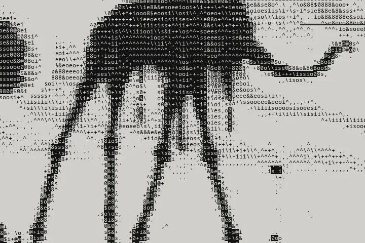
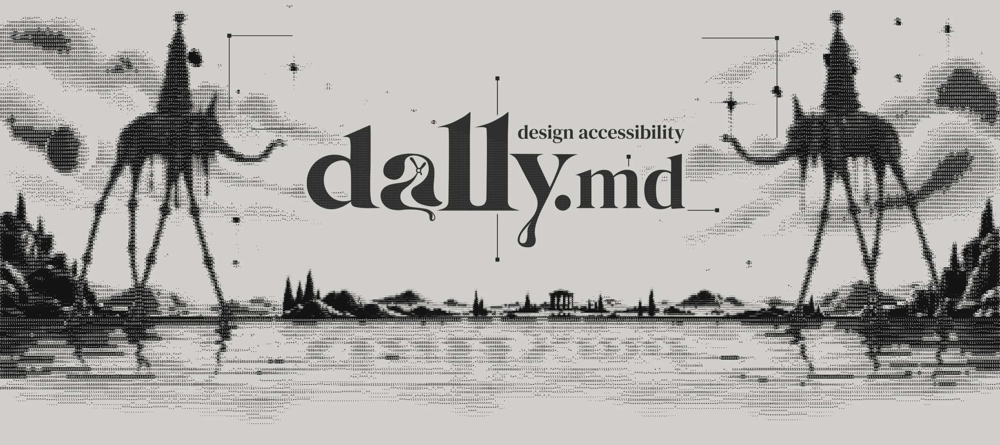
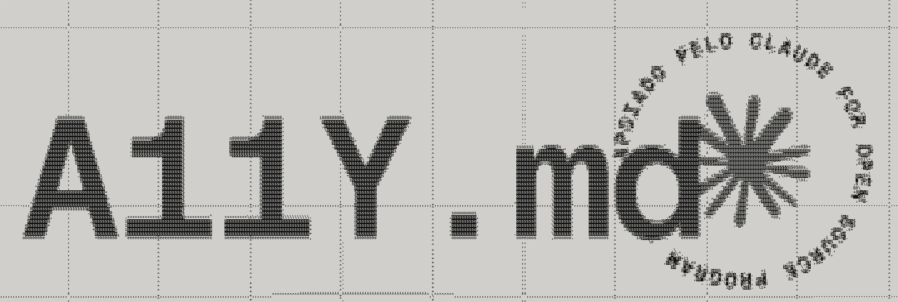
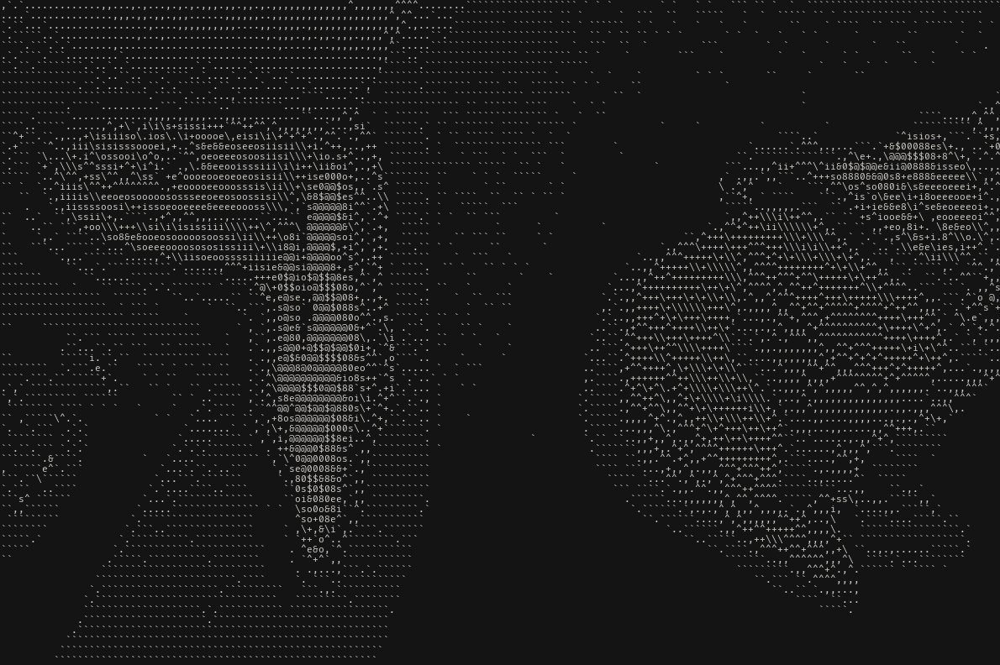
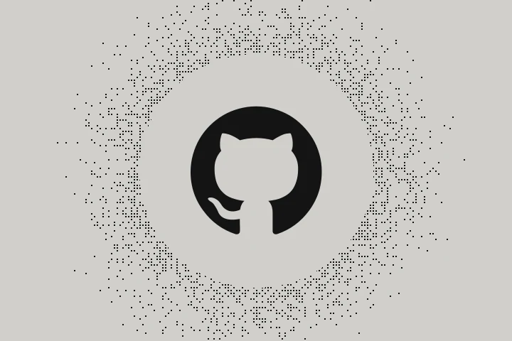
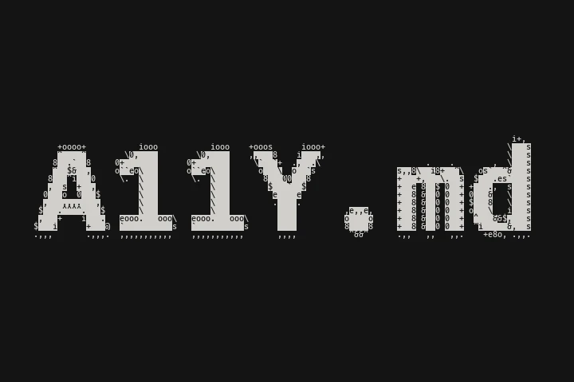

Contribuir
Enviar um relato de campo (abre em nova aba)
O que o agente fez, o que você esperava e o que aconteceu.
Deixe seu Figma acessível

O DA11Y.md é um protocolo para o agente de inteligência artificial (IA) do Figma desenhar interfaces acessíveis. Ele leva ao arquivo de design as mesmas regras que o A11Y.md (abre em nova aba) leva ao código, e assim a interface já nasce acessível no protótipo.
Muitas decisões de acessibilidade são tomadas antes de o código existir. Quando o desenho chega a quem desenvolve, estas já estão nele:
Quando o desenho ignora essas decisões, o dev corrige no código, e o produto acaba diferente do que foi desenhado. O DA11Y.md leva as regras para o momento em que a tela é desenhada. Assim design e código respondem aos mesmos números.
Para um pedido de cada vez, sem preparar nada antes.
Escreva o pedido como sempre e acrescente o link do protocolo. Por exemplo:
Crie este componente seguindo estritamente as regras de acessibilidade do arquivo https://raw.githubusercontent.com/fecarrico/DA11Y.md/main/docs/pt-BR/DA11Y.mdAnalise esta tela seguindo estritamente as regras de acessibilidade do arquivo https://raw.githubusercontent.com/fecarrico/DA11Y.md/main/docs/pt-BR/DA11Y.mdO agente lê o protocolo, aplica a sua biblioteca primeiro e anota no arquivo o que encontrou.
Quando ele apontar um contraste reprovado, confira o mesmo par na checagem de contraste do Figma, no seletor de cor. Não use a correção automática, porque ela troca a cor que veio da biblioteca.
Para chamar o protocolo com uma barra, em qualquer arquivo. Funciona em todos os planos.
Abra a página da skill na Comunidade do Figma e salve a skill na sua conta.
Se preferir criar a skill você mesmo, clique na caixa do pedido, no chat do agente, e escolha Skills › Add skill › Start from scratch. Preencha os três campos com estes textos e clique em Add.
da11yCria e analisa jornadas, telas e componentes seguindo as regras de acessibilidade do DA11Y.md.Ao criar, editar ou analisar jornadas, telas ou componentes, siga estritamente as regras de acessibilidade do arquivo https://raw.githubusercontent.com/fecarrico/DA11Y.md/main/docs/pt-BR/DA11Y.mdPara usar, digite /da11y no pedido e escreva o que precisa, como /da11y analise esta tela. A skill fica disponível em todos os seus arquivos.
Para a regra entrar sozinha nos desenhos feitos com a sua biblioteca.
Baixe a guideline pronta, um arquivo Markdown com a regra.
Na biblioteca, abra Library › Manage guidelines e envie o arquivo.
Quando alguém pedir ao agente um desenho com essa biblioteca, a regra entra sozinha.
As guidelines de biblioteca são um recurso dos planos Professional, Organization e Enterprise, e valem para pedidos de desenho com a biblioteca. Para analisar uma tela que já existe, use o chat ou a skill.
Cada elemento em que o leitor de tela para recebe uma anotação só, presa a ele, com a ordem de leitura e o que é lido. Um erro cabe numa linha. Cada tipo tem a sua categoria, e assim cada pessoa filtra o que precisa fazer. A tela avaliada recebe uma anotação com o status, na categoria Accessibility. Quando você decide, acrescenta uma linha com ✓ e o seu nome.
3 · aviso
📢 "Aviso salvo"
🔊 botão "Fechar aviso"
🟠 HIGH · Aqui: borda do campo E-mail com a cor trocada
🟠 HIGH · Biblioteca: texto do botão abaixo do contraste mínimo
O DA11Y.md é um arquivo Markdown que o agente lê por link e carrega só as partes que a tarefa pede. São cinco regras.
O agente procura os componentes, as variáveis e os estilos da biblioteca, e as regras já registradas, como um DESIGN.md. Ele aplica tudo como está e depois avalia. Ele avisa cada decisão prévia que afeta a acessibilidade, com a origem e a medida, e só corrige com autorização expressa.
O contraste é calculado por um script que roda dentro do Figma, a partir dos valores dos tokens, em todo estado e em todo modo. Quando um par reprova, você confere o mesmo par na checagem de contraste do próprio Figma.
Cada tela avaliada recebe uma anotação curta, nativa do Figma, com o status e o que há para fazer. O relatório completo sai no chat, para você salvar e entregar a quem desenvolve.
Uma anotação por elemento, com a ordem de leitura e o que o leitor de tela lê. Um erro cabe numa linha. Medidas, ressalvas e o que passou ficam no relatório, fora do canvas.
Quando a tarefa é criar componentes, o agente também escreve o que o próximo agente precisa ler: a descrição, os apelidos, o contrato de acessibilidade e a anatomia na ordem de leitura.
O A11Y.md (abre em nova aba) é um arquivo que ensina a IA que programa (Cursor, Claude, Copilot) a construir interfaces acessíveis desde a primeira linha, seguindo as Diretrizes de Acessibilidade para Conteúdo Web (WCAG 2.2, na sigla em inglês). O DA11Y.md é o irmão dele para quem desenha. Ele leva as mesmas regras ao Figma, antes de o código existir.

[herda]
Os perfis de conformidade, os limites de contraste e de área de toque e o modelo de severidade vêm do A11Y.md. Um script confere que os dois nunca se afastam, em inglês e em português.
[herda]
Um arquivo que o agente lê por link e que carrega cada guia só quando a tarefa pede. Nada para instalar.
[só dele]
Ler um arquivo do Figma, avaliar o que o design system já decidiu e deixar a evidência em anotações no próprio arquivo.
[encontro]
O relatório de design termina pedindo que o código siga o A11Y.md, e o agente de código continua de onde o design parou. Quem programa não precisa carregar as regras de design.

Curiosidade
DA11Y.md é a soma do D de design com o A11Y de acessibilidade. O nome pode ser lido como "dally", que soa como o nome do pintor Salvador Dalí. A referência à arte é de propósito, porque aproxima o projeto do design e da criatividade, que é o meio de quem vai usá-lo.
O "a" do logotipo carrega o relógio derretido do quadro A Persistência da Memória. A escolha mostra a pretensão do projeto, que é ser um contexto persistente na memória do agente. O agente deve usar o protocolo sempre que desenha uma interface.
Para caber nessa memória, o protocolo segue boas práticas de engenharia de prompt e carrega cada guia só quando a tarefa pede, o que poupa tokens. Mas o foco não é economia, é acessibilidade.
A contribuição mais útil é um relato de campo. Conte o que aconteceu quando você usou o DA11Y.md num desenho real. O guia de contribuição (abre em nova aba) explica o resto.

O que o agente fez, o que você esperava e o que aconteceu.

O protocolo, os guias de componente e os modelos de relatório, no GitHub.

O protocolo irmão, para o agente de código.